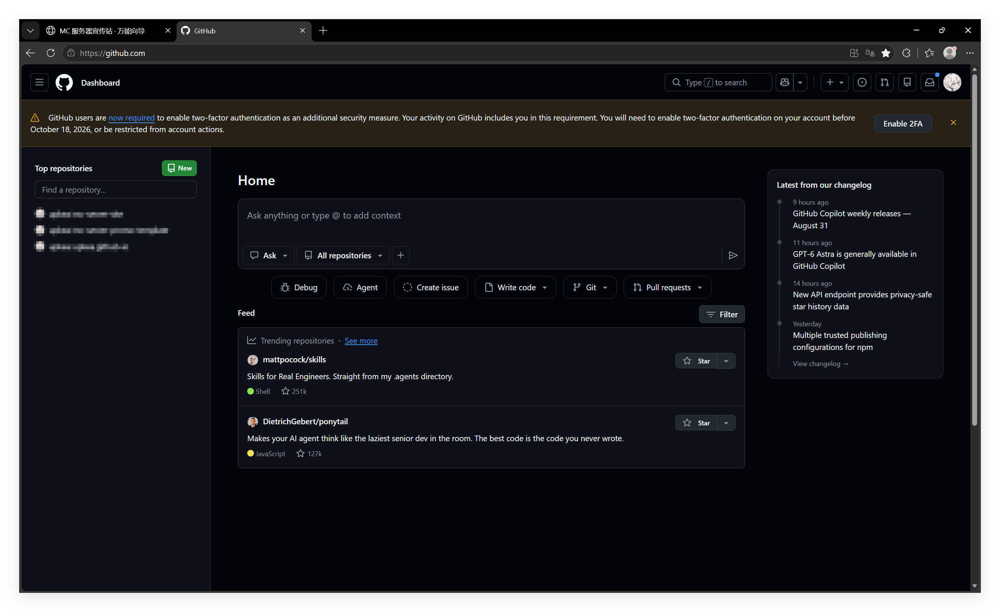
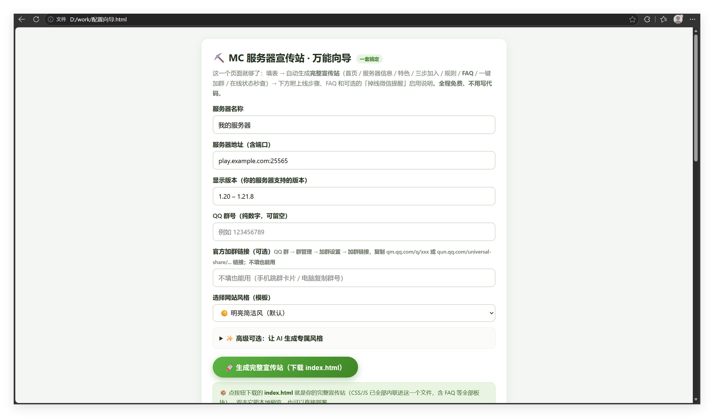
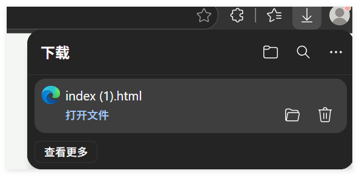
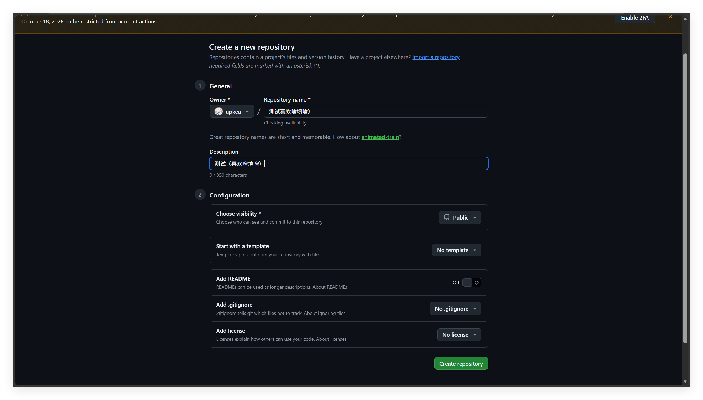
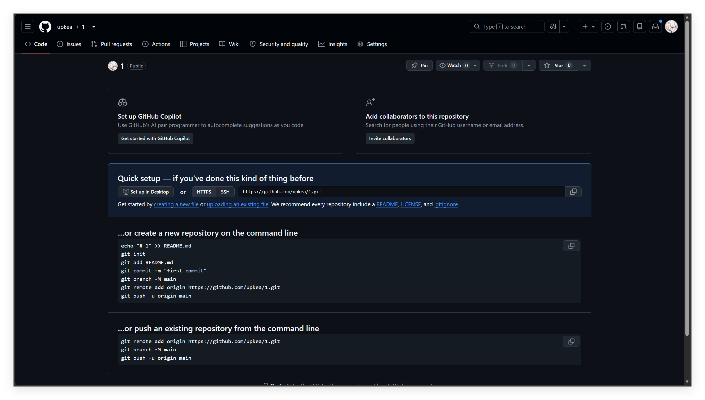
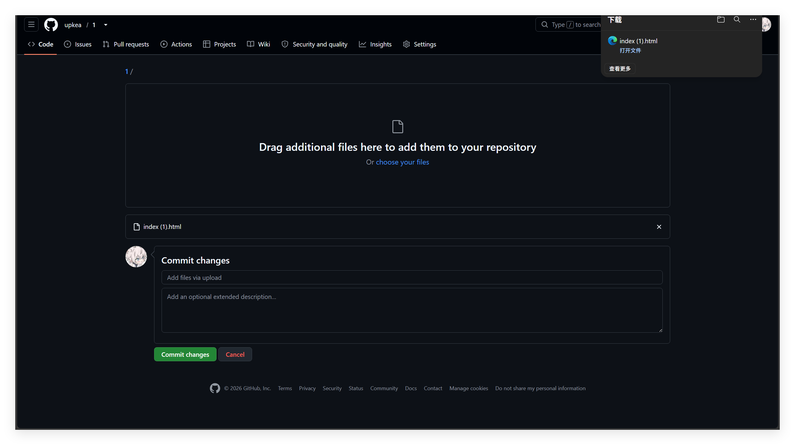
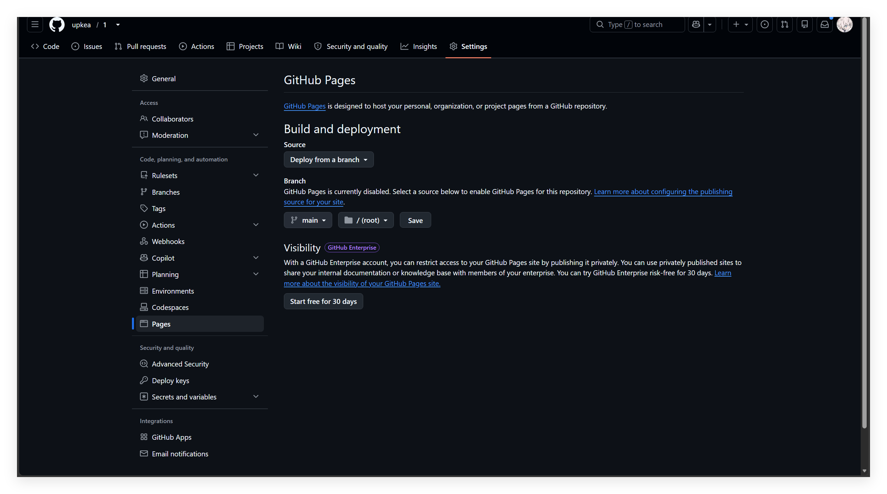
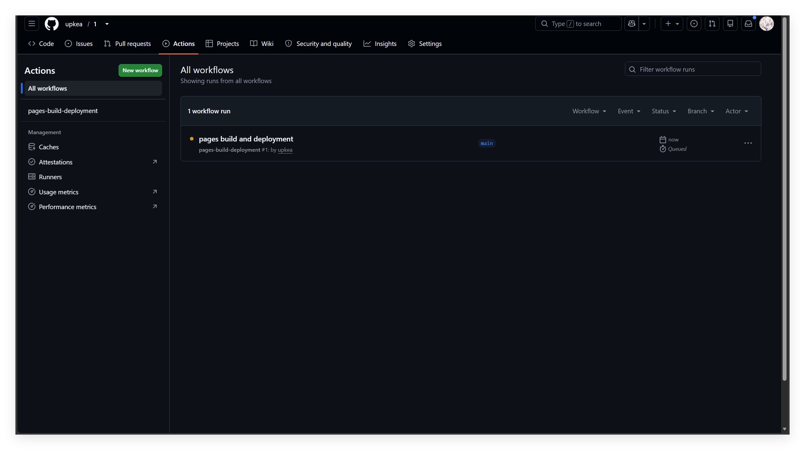

从零到上线，跟着图一步步做（宣传站生成 + 免费部署）。掉线提醒部分见文末说明。
打开 github.com 注册并登录（免费）。本页图来自示范账号 upkea，界面与你的一致。

双击 配置向导.html，依次填：服务器名称、服务器地址（含端口）、显示版本、QQ 群号；
再选一套网站风格（明亮 / 暗色像素 / 现代渐变，也可用下方 ✨ AI 生成专属风格）。

点「🚀 生成完整宣传站」，浏览器会下载 index.html —— 这就是你的完整宣传站（CSS/JS 已打包进这一个文件）。

右上角 ＋ → New repository：名字填英文（如 mc-server-site），选 Public（公开），其余默认 → Create repository。

创建完成后会进入空仓库页：

点 Add file → Upload files，把生成的 index.html 拖进上传区 → 点绿色 Commit changes。

仓库 Settings → Pages：Source 选 Deploy from a branch，Branch 选 main，目录保持 /(root) → Save。

仓库顶部 Actions 里，等 pages build and deployment 变绿色 ✓ 即成功；
网址在 Settings → Pages 顶部绿色横幅：Your site is live at https://你的用户名.github.io/仓库名/ —— 发给玩家即可。

见 README.md / 完整版详细教程.md 的「开启掉线提醒」章节
（Server酱 SendKey → 仓库 Secrets 添加 SERVERCHAN_KEY → Actions 启用 server-watchdog）。
本教程的截图部分待补充，不影响功能。